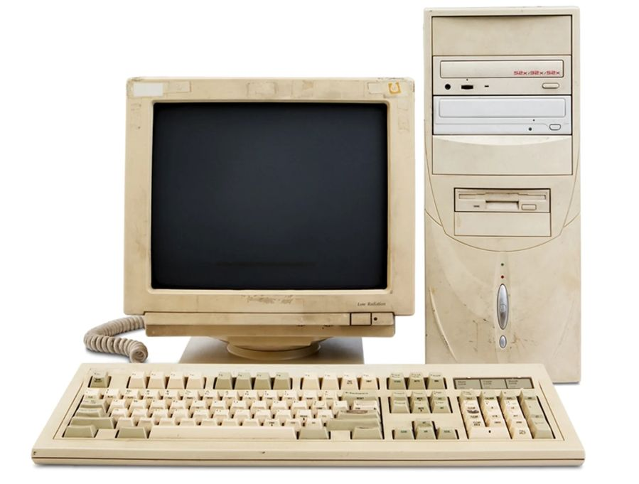

A evolução da Internet
Provavelmente você usa a internet todos os dias para estudar, conversar, trabalhar ou se divertir. Mas o que muita gente não sabe é que a internet não surgiu como algo comercial ou voltado ao entretenimento. Neste artigo, você vai entender como ela nasceu, como evoluiu e por que se tornou essencial na vida moderna.
O início da internet
A internet surgiu durante a Guerra Fria, como um projeto militar dos Estados Unidos. O objetivo era criar um sistema de comunicação que continuasse funcionando mesmo em caso de ataques. Esse projeto ficou conhecido como ARPANET e permitia a troca de informações entre computadores distantes. No início, apenas universidades e centros de pesquisa tinham acesso à rede. Não existiam redes sociais, vídeos ou sites como conhecemos hoje.
A popularização da web
Nos anos 1990, a internet começou a se popularizar com o surgimento da World Wide Web. Foi nesse momento que os primeiros sites foram criados, utilizando HTML para estruturar conteúdos e navegadores para acessá-los. Com o tempo, surgiram buscadores, portais de notícias e serviços de e-mail, tornando a internet mais acessível ao público em geral.

A internet nos dias atuais
Hoje, a internet está presente em praticamente tudo: celulares, computadores, televisões e até eletrodomésticos. Ela possibilita o ensino a distância, o trabalho remoto e o acesso rápido à informação. Além disso, tecnologias como redes sociais, computação em nuvem e inteligência artificial dependem diretamente da internet para funcionar.
Curiosidades rápidas sobre tecnologia
- O primeiro site da internet ainda está online
- O HTML foi criado em 1991
- O CSS surgiu para separar conteúdo de estilo
- Mais da metade da população mundial tem acesso à internet
- A maioria dos sites utiliza tecnologias open source
- A tecnologia evolui constantemente, e acompanhar essas mudanças é fundamental para quem deseja trabalhar na área.
Então é isso! Esperamos que este artigo tenha ajudado você a entender melhor a importância da tecnologia e da internet no mundo atual.